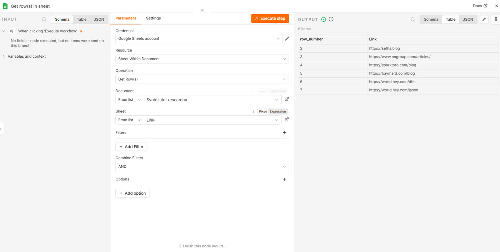
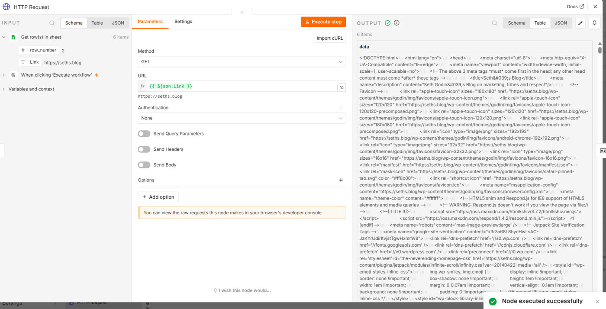
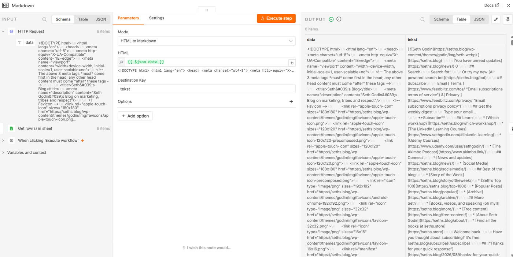
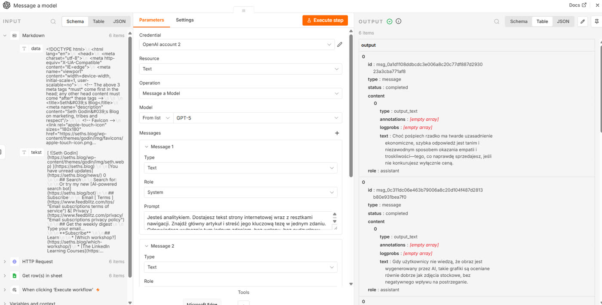
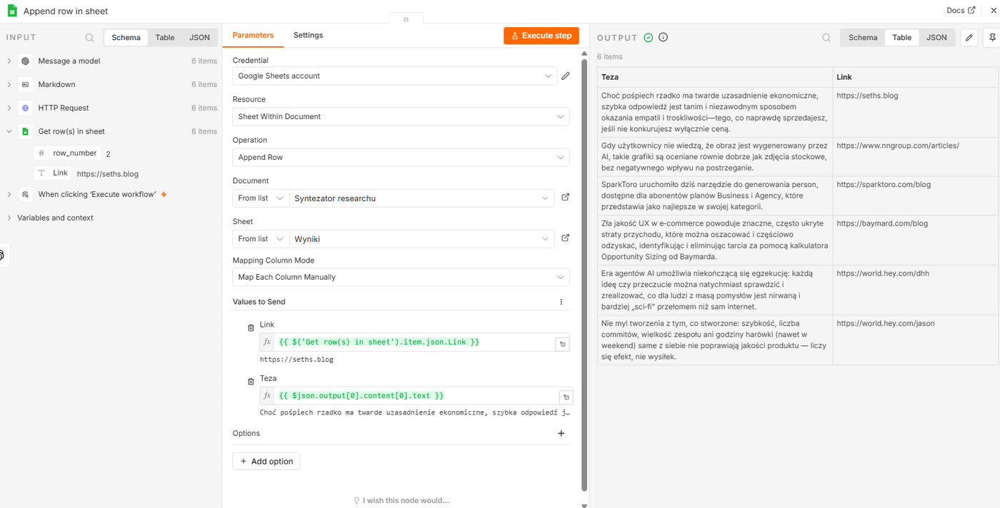
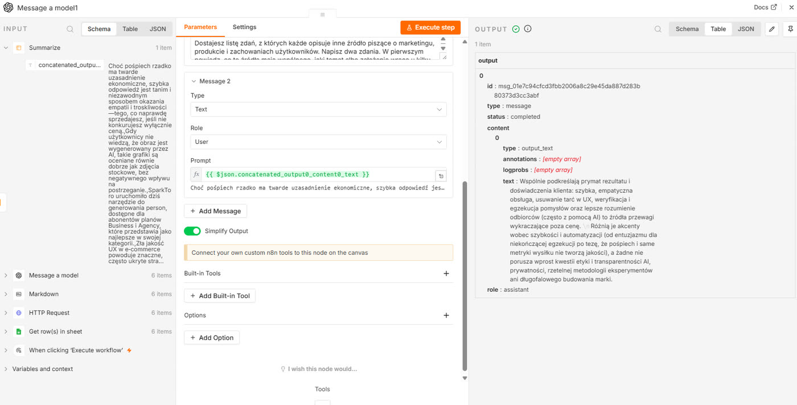
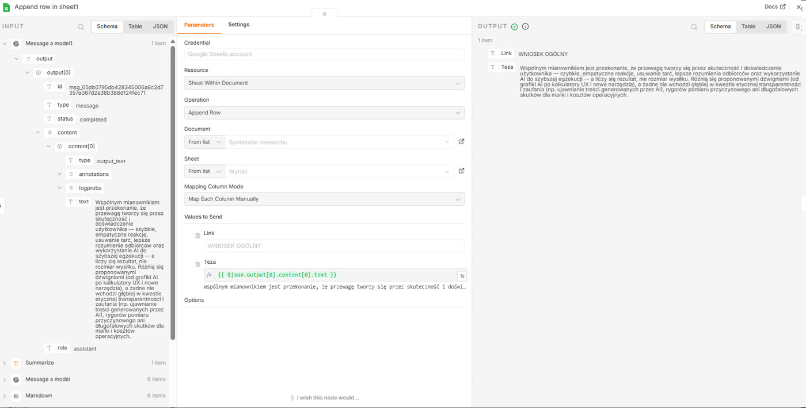

Rozdział 6
Rozdział 6. Syntezator researchu
Research to czynność, którą marketer wykonuje stale i prawie nigdy nie kończy. Otwierasz dwanaście zakładek, czytasz osiem, zapamiętujesz trzy, a do briefu trafia jedna, zwykle ta ostatnia przeczytana. Nie dlatego, że była najlepsza, tylko dlatego, że była najświeższa w pamięci.
Problemem nie jest brak informacji, tylko to, że nigdy nie widzimy ich wszystkich naraz. Czytamy sekwencyjnie, a wnioskować chcielibyśmy równolegle.
W rozdziale 5 przepływ oceniał każdy element osobno i osobno o nim decydował. Tutaj zrobisz coś nowego: zbierzesz wyniki z rozproszonych źródeł w jedno miejsce i dopiero wtedy poprosisz o ocenę całości.
Co zbudujemy
System, który dostaje listę adresów, dla każdego z osobna wyciąga jedną kluczową myśl, a na końcu dopisuje jeszcze jeden wiersz: wniosek z porównania wszystkich źródeł razem. Wynikiem jest tabela w arkuszu Google, gotowa do wklejenia w briefie albo prezentacji.
Czas i koszt
Budowa: około trzydziestu minut. To długi przepływ - dziewięć węzłów, ale żaden z nich nie jest trudny.
Koszt: kilka groszy za uruchomienie. Więcej niż w rozdziale 5, bo model dostaje tym razem całe strony, a nie same nagłówki.
Czego się nauczysz
- Jak węzłem „HTTP Request" pobrać treść dowolnej strony, bez API tego serwisu.
- Jak jednym węzłem obciąć z pobranej strony wszystko, za co nie chcesz płacić.
- Jak scalić rozproszone wyniki w jeden element, żeby model mógł ocenić je razem, a nie po kolei.
Przygotuj arkusz
Zanim otworzysz n8n, załóż nowy arkusz w Google Sheets. Nazwij go „Syntezator researchu" i zrób w nim dwie zakładki.
W pierwszej, „Linki", w komórce A1 wpisz nagłówek Link, a poniżej wklej adresy źródeł. Na potrzeby tego rozdziału użyjemy sześciu blogów, na których wypowiadają się ludzie mający coś do powiedzenia o marketingu, produkcie i zachowaniach użytkowników:
https://www.nngroup.com/articles/
W drugiej zakładce, „Wyniki", w komórce A1 wpisz Link, a w B1 Teza. Resztę zostaw pustą, wypełni ją przepływ.
Wczytaj linki
Utwórz nowy, pusty przepływ. Dodaj wyzwalacz „Manual trigger" (uruchom ręcznie), ten sam, którego używałeś w rozdziałach 1, 3 i 4.
Kliknij plus przy wyzwalaczu, wpisz „Google Sheets" i wybierz z listy akcji „Get row(s) in sheet" (pobierz wiersze arkusza).
Przy polu „Credential" kliknij „Create new credential" i „Sign in with Google". To ten sam ekran logowania Google co przy Gmailu w rozdziale 3, tym razem z prośbą o dostęp do Arkuszy zamiast do poczty.
W polu „Document" wybierz z listy swój arkusz, a w polu „Sheet" zakładkę „Linki". Kliknij „Execute step".
Na ekranie zobaczyszw panelu OUTPUT sześć elementów, każdy z jednym polem Link.

Pobierz treść
Kliknij plus przy węźle Google Sheets, wpisz „HTTP Request" i wybierz węzeł z listy.
W polu „Method" (metoda) zostaw GET. W polu „URL" przeciągnij pole Link z panelu danych wejściowych po lewej stronie. Kliknij „Execute step".
Na ekranie zobaczyszw panelu OUTPUT pole data, a w nim długi ciąg zaczynający się od <!DOCTYPE html>, pełen znaczników w ostrych nawiasach. To surowy kod pierwszej strony z listy.

Obetnij, za co nie chcesz płacić
Zanim treść trafi do modelu, trzeba usunąć z niej to, co nie jest treścią. Kliknij plus przy węźle „HTTP Request", wpisz „Markdown" i wybierz węzeł z listy.
Ustaw „Mode" (tryb) na „HTML to Markdown". W polu „HTML" przeciągnij pole data z panelu danych wejściowych. W polu „Destination Key" (pole docelowe) wpisz „tekst" zamiast domyślnej wartości, żeby wynik nie nadpisał oryginału.
Kliknij „Execute step".
Na ekranie zobaczyszw panelu OUTPUT nowe pole tekst, a w nim ten sam artykuł, tyle że bez znaczników. Zostały nagłówki, akapity i linki. Zniknęły metadane, skrypty, style i favicony.

Oceń każde źródło
Kliknij plus przy węźle „Markdown". Dodaj węzeł „OpenAI" z akcją „Message a model", tak jak w rozdziale 4, i wskaż dane dostępowe zapisane wtedy.
W polu „Model" wybierz model z bieżącej listy.
Dodaj wiadomość z rolą „System" i wpisz w niej:
„Jesteś analitykiem. Dostajesz tekst strony internetowej, wraz z resztkami nawigacji. Znajdź główną treść i streść w jednym zdaniu, czym to źródło się w tej chwili zajmuje i jakie stanowisko zajmuje. Odpowiadasz wyłącznie tym jednym zdaniem, bez wstępu, bez cudzysłowu."
Dodaj drugą wiadomość, z rolą „User", i przeciągnij do niej pole tekst z panelu danych wejściowych. Uwaga: tekst, nie data. Kliknij „Execute step".
Na ekranie zobaczyszw panelu OUTPUT, w polu text, jedno zdanie.

Zapisz wynik każdego źródła
Kliknij plus przy węźle OpenAI, dodaj kolejny węzeł „Google Sheets" i wybierz akcję „Append row in sheet" (dopisz wiersz). Użyj tych samych danych dostępowych, wskaż ten sam dokument i zakładkę „Wyniki".
W mapowaniu kolumn przeciągnij text z odpowiedzi modelu do kolumny Teza.
Kolumna Link wymaga więcej uwagi, bo adresu nie ma już w panelu wejściowym. Rozwiń w lewym panelu węzeł „Get row(s) in sheet", ten sam, od którego zaczynał się przepływ, znajdź w nim pole Link i przeciągnij je do pustego pola. W polu pojawi się dłuższe wyrażenie niż zwykle, bo n8n musi zapisać nie tylko nazwę pola, ale i to, z którego węzła je bierze.

Kliknij „Execute workflow", czyli uruchom cały przepływ, nie pojedynczy krok. Poczekaj i otwórz zakładkę „Wyniki" w arkuszu.
Na ekranie zobaczyszsześć nowych wierszy, każdy z adresem i jednym zdaniem. Bez pętli. Bez węzła „Loop Over Items" z rozdziału 5.
Scal i zsyntetyzuj
Wróć do węzła OpenAI z kroku 6. Z jego wyjścia wychodzi już jedno połączenie, do zapisu w arkuszu. Dociągnij z tego samego wyjścia drugie połączenie, do nowego węzła. Wpisz „Summarize" i wybierz węzeł z listy.
Przepływ rozdziela się teraz na dwie równoległe gałęzie wychodzące z jednego punktu. To nie to samo, co rozgałęzienie warunkowe z rozdziału 5. Tam element szedł jedną drogą albo drugą. Tu każdy element idzie obiema naraz.
W sekcji „Fields to Summarize" (pola do podsumowania) wskaż pole text, czyli odpowiedź modelu z kroku 6. Jako operację wybierz „Concatenate" (sklej), a w opcji separatora ustaw nową linię. Kliknij „Execute step".
Na ekranie zobaczyszw panelu OUTPUT już nie sześć elementów, tylko jeden. W środku jedno pole tekstowe, a w nim wszystkie sześć zdań, jedno pod drugim.

Kliknij plus przy węźle „Summarize" i dodaj drugi węzeł „OpenAI", z tymi samymi danymi dostępowymi i tym samym modelem.
Wiadomość z rolą „System":
„Dostajesz kilka zdań, z których każde opisuje inne źródło piszące o marketingu, produkcie i zachowaniach użytkowników. Napisz dwa zdania. W pierwszym powiedz, co te źródła mają wspólnego, jaki temat albo założenie wraca u kilku z nich. W drugim powiedz, w czym się rozchodzą albo czego żadne z nich nie porusza. Nie wymieniaj źródeł po kolei, mów o całości."
Wiadomość z rolą „User": przeciągnij pole ze sklejonym tekstem z panelu danych wejściowych. Kliknij „Execute step".
Kliknij plus przy drugim węźle OpenAI i dodaj trzeci węzeł „Google Sheets" z akcją „Append row in sheet", wskazujący na tę samą zakładkę „Wyniki".
W mapowaniu: w polu Link wpisz ręcznie tekst WNIOSEK OGÓLNY. Tym razem naprawdę nie ma czego przeciągać, bo ten wiersz nie odnosi się do żadnego pojedynczego źródła. W polu Teza przeciągnij odpowiedź drugiego węzła OpenAI.
Kliknij „Execute workflow" jeszcze raz, od początku. Otwórz zakładkę „Wyniki".
Na ekranie zobaczyszsześć wierszy źródeł, a pod nimi jeden nowy, z etykietą WNIOSEK OGÓLNY i dwoma zdaniami porównania.

Sprawdź, czy działa
Policz wiersze w zakładce „Wyniki". Powinno ich być siedem: sześć źródeł i jeden wniosek ogólny, zawsze na końcu, bo powstaje jako ostatni.
Co może pójść nie tak
- „Your input exceeds the context window of this model". Treść nie zmieściła się w pamięci roboczej modelu. Sprawdź dwie rzeczy: czy w polu „Model" nie stoi stary GPT-4 i czy węzeł Markdown na pewno stoi przed węzłem OpenAI.
- Węzeł HTTP Request zwraca błąd 403 Forbidden. Strona rozpoznała pobieranie bez przeglądarki i je zablokowała. Nie ma na to prostego obejścia. Najlepiej więc zamień ten adres na inny.
- Wiersz w arkuszu ma pustą albo bardzo ogólną tezę. Sprawdź w panelu OUTPUT węzła HTTP Request, czy w ogóle coś pobrał. To zwykle znak strony budowanej przez skrypt, patrz ramka 6.3.
- Model streszcza menu zamiast treści. Zdarza się przy stronach głównych blogów z bardzo długą nawigacją. Wskaż wtedy adres pojedynczego artykułu zamiast strony głównej.
- Google Sheets zgłasza, że nie znajduje zakładki. W polu „Sheet" wybrana jest zła zakładka albo została w międzyczasie przemianowana. Wskaż ją ponownie.
- Wiersz WNIOSEK OGÓLNY nigdy się nie pojawia, choć wiersze źródeł owszem. Sprawdź, czy oba połączenia faktycznie wychodzą z pierwszego węzła OpenAI.
Wariacje na temat
Rozszerz polecenie systemowe z kroku 8 tak, żeby model oprócz tezy przypisywał źródłu jedno słowo - kategorię, na przykład produkt, cena albo employer branding. Dodaj w zakładce „Wyniki" trzecią kolumnę, Kategoria, i zmapuj do niej to dodatkowe słowo. Dostaniesz tabelę, którą da się sortować i filtrować, nie tylko czytać od góry do dołu.
Zamiast czekać, aż ktoś otworzy arkusz, podłącz do drugiego węzła OpenAI trzeci węzeł: „Gmail" - „Send a message", tak jak w rozdziale 5. Wyślij sobie wniosek ogólny mailem, gdy tylko powstanie, obok wiersza w arkuszu, nie zamiast niego. Arkusz zostaje archiwum wszystkich źródeł, skrzynka - powiadomieniem o tym jednym zdaniu, które faktycznie trzeba przeczytać.
Przepływ w repozytorium
Pobierz plik 06-syntezator-researchu.json ze strony heuristica.pl/automatyzacje-n8n i zaimportuj go tak samo jak w rozdziale 1. Po imporcie wskaż własne dane dostępowe do Google Sheets i OpenAI oraz podmień arkusz na własny, razem z listą adresów w zakładce „Linki".
Filtr z rozdziału 5 odpowiadał na pytanie: czy to jest istotne. Ten system odpowiada na inne: co z tego wszystkiego wynika. Nie otwiera dwunastu zakładek za ciebie - otwiera je gdzieś indziej, czyta wszystkie naraz i, w odróżnieniu od ciebie, pamięta wszystkie osiem, nie tylko trzy ostatnie.